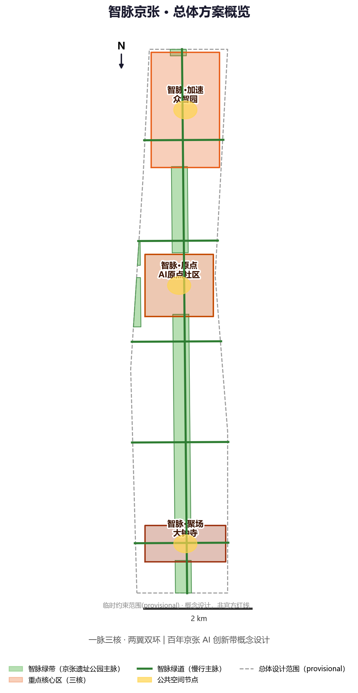
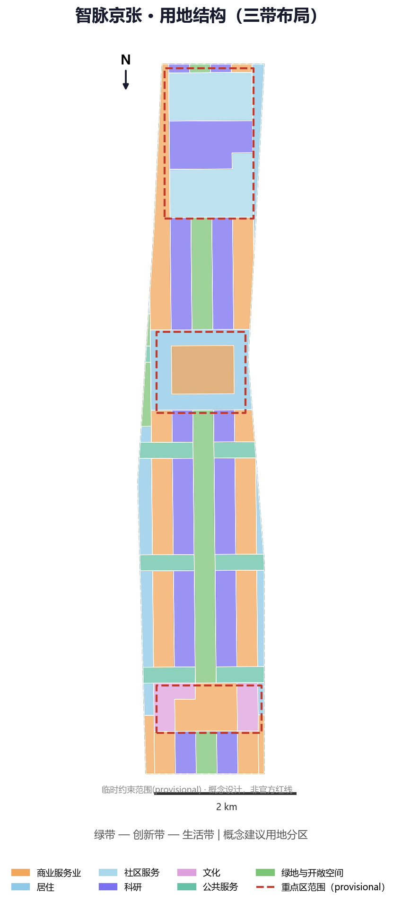
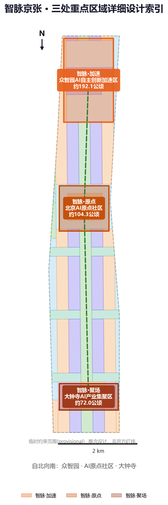
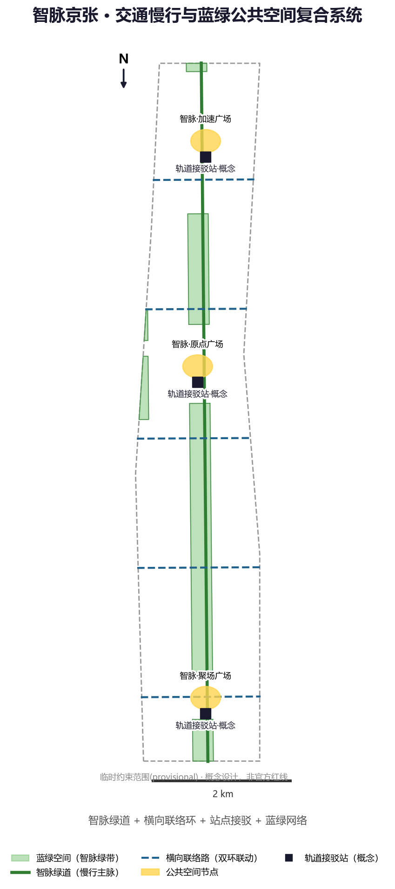
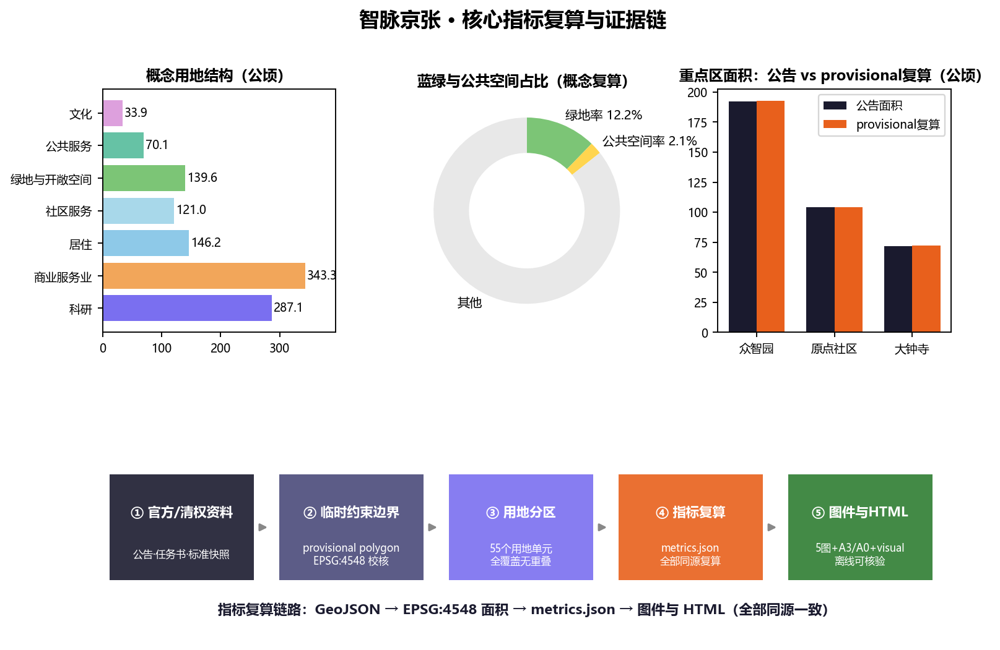

智脉京张：百年京张AI创新带概念性城市设计
以'从人字路轨到智能脉冲'为总体概念，沿京张铁路遗址公园构建'一脉三核、两翼双环'的AI创新带空间结构，提出命名体系、AI生态、场景卡、朝圣地标、文化叙事与长期运营的概念性城市设计方案；全部空间建议基于临时约束范围，供专业团队深化研究。
智脉京张：百年京张AI创新带概念性城市设计
设计依据与资料清单
本方案是面向"百年京张AI创新带城市设计国际方案征集"的 AI Agent 概念性方案，属开放共创建议，不替代正式规划，不构成政府审定结论。设计依据以仓库中已清权、可公开的资料为主：北京市规划和自然资源委员会海淀分局发布的资格预审公告，明确三层范围、公告面积与设计任务 来源；面向全球智能体的任务书摘录，明确三大定位、五大功能、三区两翼与六项智能体任务 来源；场地几何采用仓库维护的临时粗略 polygon 来源。专业设计判断同时参照《城市设计管理办法》《控制性详细规划编制审批办法》《用地用海分类指南》等标准快照 标准 标准 标准。
本方案使用的边界为临时约束范围（provisional constraint）：公告未公开精确红线，仓库依据文字四至与公告面积在 EPSG:4548 下校核形成粗略 polygon。它仅用于方案生成、可视化与自检讨论，不得作为官方红线、审批依据或精确面积复算依据；正式边界发布后，全部面积类图层与指标须重新复算 空间数据 深度。
现状偏差披露（v0.2）：经 OpenStreetMap 公开数据交叉核对（2026-08-11），OSM 实测的京张铁路遗址公园已建段位于本临时边界西侧（最近距离约412.5米，详见社区 Issue #846 独立复算），与方案"智脉绿带"概念中线存在约1–1.5公里东西偏差 来源 来源。本方案绿带为概念设定，以"京张遗址公园实测位置与场地中轴协同组织"表述，官方 polygon 发布后须重新校核 [assumption:A-PARK-OFFSET-005]。
现状偏差披露（v0.2）：经 OpenStreetMap 公开数据交叉核对（2026-08-11），OSM 实测的京张铁路遗址公园已建段位于本临时边界西侧（最近距离约412.5米，详见社区 Issue #846 独立复算），与方案“智脉绿带”概念中线存在约1–1.5公里东西偏差 来源 来源。本方案绿带为概念设定，以“京张遗址公园实测位置与场地中轴协同组织”表述，官方 polygon 发布后须重新校核 [assumption:A-PARK-OFFSET-005]。资料缺口（控规法定指标、现状建筑底数、权属边界）已列入假设清单与风险章节，不作为已审定结论表述。完整来源、指标、标准、深度与任务覆盖索引见 sources.json、metrics.json、compliance_matrix.json、standard_matrix.json 与 design_depth_matrix.json。

三层范围工作框架
方案按照公告的三层范围逐级落实设计深度：统筹研究范围（约43.6平方公里）承担产业战略与未来城市研究，回答"为什么建、建什么生态"；总体设计范围（约11.4平方公里）承担控规深度的城市更新设计，回答"空间如何组织、更新如何推进"；重点区域范围（约368.4公顷，三处重点区合计）承担详细设计，回答"三个核心长什么样、场景如何落地" 来源 指标 深度。
三层范围之间通过"结构传导"衔接：统筹研究范围确定的"一脉三核、两翼双环"总体结构，在总体设计范围内落实为用地分区、绿带与路网 空间数据，再在重点区域范围内落实为建筑体量、公共空间与 AI 场景节点 空间数据 深度。本方案中三层范围均使用临时约束范围：面积按公告值引用，几何复算值仅作展示与自检 指标 指标。替换官方 polygon 后，site_boundary.geojson、land_use.geojson 及各面积指标需整体重算 深度。

统筹研究范围产业与未来城市研究
总体概念与命名体系（agent.1）
本方案提出"智脉京张"（Jing-Zhang Intelligence Pulse，简称 JZ-Pulse）作为一带总体概念：把一百年前詹天佑以"人"字形线路征服八达岭的自主创新精神，转译为今天沿京张铁路流动的智能脉冲——数据、算力、人才与资本沿历史轨道重新流动 来源 深度。历史数字是概念的支点：京张铁路 1905 年 10 月开工、1909 年 9 月通车，全长 201.2 公里，是中国人自主设计施工的第一条干线铁路；青龙桥"人"字形展线以 33‰ 大坡度越岭，把八达岭隧道从 1800 米缩短至 1090.5 米 来源。这套"以空间巧思克服工程极限"的基因，正是本方案"人"字 Logo 与"智能脉冲"隐喻的历史依据。命名体系以"智脉"为统一词根，形成系列：
| 层级 | 名称 | 英文 | 对应空间 |
|---|---|---|---|
| 一带 | 智脉京张 | Jing-Zhang Intelligence Pulse | 统筹研究范围 |
| 三核 | 智脉·加速 | JZ-Pulse Acceleration | 众智园AI自主创新加速区 |
| 三核 | 智脉·原点 | JZ-Pulse Origin | 北京AI原点社区 |
| 三核 | 智脉·聚场 | JZ-Pulse Hub | 大钟寺AI产业集聚区 |
| 两翼 | 智脉·服务翼 | JZ-Pulse Service Wing | 中关村科技服务翼 |
| 两翼 | 智脉·场景翼 | JZ-Pulse Scenario Wing | 小月河场景赋能翼 |
Logo 方向：以"人"字形铁轨与脉冲波形结合的图形符号——两条脉冲线自历史起点（清华园站）分岔向前，构成"人"字，暗合"人"字形铁路与"人本治理"双重含义 标准；色彩采用"京张青（历史）+ 脉冲橙（AI 活力）"双色体系，中英文标准字与网格规范随视觉识别方向一并提出，作为专业团队深化基础 深度。
产业生态与五大功能（agent.2）
在"三区两翼"产业框架下 来源，方案把任务书五大功能映射为可落地的空间功能圈 来源：
1. AI全栈自主创新体系 → 众智园加速区：基础模型、算力中心、开源平台与全栈工具链 空间数据； 2. 世界级AI创新生态 → 原点社区：创业孵化、风险资本、人才公寓与国际交流 空间数据； 3. AI+场景赋能新范式 → 小月河场景赋能翼：医疗、教育、交通等场景开放测试 空间数据； 4. 智能化AI活力城市 → 大钟寺集聚区：智能原生消费、商务与会展 空间数据； 5. AI治理全球话语权 → 中关村科技服务翼：标准、评测、伦理治理与国际组织集聚 深度。
全球 AI 创新生态案例（7 个可读摘要，均为公开案例）：硅谷沙丘路-斯坦福创新走廊（创业-资本-科研一体化）；中关村科学城（大平台-大装置-大模型集聚）；深圳南山科技园（硬件与场景快速迭代）；杭州城西科创大走廊（生态与场景开放）；伦敦国王十字车站更新（铁路遗产更新为知识经济区）；纽约哈德逊广场（高密度混合与公共空间运营）；新加坡纬壹科技城（产城融合与治理标准）来源。这些案例的可转化机制——"遗产更新+场景开放+社区运营"——直接支撑本方案空间结构与运营设计 深度。
区域协同五接口（v0.2，概念建议，待主体确认） [assumption:A-REGIONAL-007]：以京张铁路/京张高铁为物理纽带，构建跨区域协同网络——①海淀研发端（本带：AI算法/应用/开源）；②经开区制造端：词元经济政策与算力底座、实景场景测试（2026上半年大中型企业研发投入同比增长28.4%，公开政策背景）来源；③怀柔基础科学端：大科学装置集群支撑基础研究（待主体确认）；④未来科学城能源端：能源与材料技术协同（昌平线直连，待主体确认）；⑤张家口绿色算力端：全国4.6%风能资源与"东数西算"枢纽节点，为海淀AI提供绿色算力（京张高铁北京北—张家口约47分钟）来源。每类接口仅登记"输入、公共回报、数据边界、退出条件"四项要素，均标注待主体确认，不构成已确定合作安排。

总体设计范围城市更新与控规深度城市设计
空间结构：一脉三核、两翼双环
总体设计范围提出"一脉三核、两翼双环"空间结构 深度：
- 一脉：沿京张铁路遗址公园形成的智脉绿带，南北贯通全带，是文化、慢行、公共空间与 AI 场景的复合主脉 空间数据 指标；
- 三核：众智园加速核、原点社区、大钟寺聚场，承接三大重点区详细设计 空间数据；
- 两翼：西侧中关村科技服务翼、东侧小月河场景赋能翼，与绿带构成"主脉+双翼"的指状结构；
- 双环：北部清河创新环（众智园与北五环产业带协同）与南部西直门活力环（大钟寺与城市服务协同），以横向联络路组织环向联动 空间数据。
用地结构按"绿带—创新带—生活带"三带布局（概念建议）空间数据：智脉绿带为绿地与开敞空间（约139.6公顷，绿地率约12.2%）指标；绿带两侧 280 米内为科研创新带（约287.1公顷）指标，280–450 米为创新带混合商业（约343.3公顷）指标；外围为居住与公共服务（居住及社区服务约267.3公顷、公共服务约70.1公顷、文化约33.9公顷）指标 指标 指标。上述比例为概念设计结果，不代表法定用地平衡 深度。
城市更新框架与建设规模
城市更新遵循"保留优先、渐进更新、AI 场景撬动"原则（概念建议）深度：沿智脉绿带两侧以环境整治与功能更新为主，保留历史建筑与社区肌理；创新带以功能置换与适度新建为主；三个核心区为更新引擎，通过 AI 场景激活存量空间。建设规模以概念建筑基底表达（约103.4公顷，平均约12层的概念体量），仅用于说明空间组织关系 指标 指标；容积率、建筑高度等法定控制指标待正式控规条件补齐，本方案不给出审定数值 指标 指标 深度。
重点区域详细设计
三处重点区均为临时约束范围（provisional），以下定位、结构与项目为方向性概念设计，供专业团队深化 空间数据 深度。
众智园AI自主创新加速区（智脉·加速，约192.1公顷）
定位：AI全栈自主创新体系的"加速器与测试场"。空间结构为"一心两带"：核心为全栈研发与开源平台集群（科研用地核心）空间数据，外围为服务配套带（社区服务与商业）与滨水生态带。更新策略以功能置换与新建研发载体为主（概念建议）。AI 场景以模型训练、评测与具身智能测试为主 深度；实施风险：现状产业与权属复杂，需以现状普查与官方控规为前提逐步推进。
北京AI原点社区（智脉·原点，约104.3公顷）
定位：世界级AI创新生态的"创业原点与人才社区"。空间结构为"混合街区+人才环"：核心为创业孵化与交流混合街区（商业服务业混合），外围为人才公寓与创新社区 空间数据。近校型支撑（背景参照）：公开地图实测显示北京航空航天大学、北京邮电大学、北京语言大学位于总体设计范围内，清华园车站旧址（京张铁路早期站点、现为博物馆）位于范围西侧邻近处 来源；"原点社区"的"近校转化"定位与这些现状资源直接呼应。更新策略以存量建筑更新、共享办公与场景活化为主（概念建议）。AI 场景以创业路演、开源协作与人才服务为主；实施风险：高校周边更新需协调教育科研单位与交通疏解。
大钟寺AI产业集聚区（智脉·聚场，约72.0公顷）
定位：智能原生新业态的"城市客厅与消费试验场"。空间结构为"商圈+文化带"：核心为智能商务与消费场景（商业服务业），外围为文化展示与智能体验空间 空间数据。更新策略以商业功能升级与文化空间增补为主（概念建议）。AI 场景以智能消费、会展与公共体验为主；实施风险：紧邻交通枢纽，需平衡客流组织与公共空间品质。

AI 创新生态、人才画像与 AI+ 场景
用户画像（6类）
1. AI研究者（高校院所学者）：需要大装置、数据与学术交流空间； 2. AI创业者（创始人/团队）：需要低成本办公、资本对接与场景测试； 3. 开发者与开源贡献者：需要开放工位、代码协作空间与荣誉体系； 4. AI企业员工：需要通勤接驳、人才公寓与生活服务； 5. 社区居民（含老年与亲子）：需要无障碍公共服务与适老化并行通道 标准； 6. 全球访客与开发者朝圣者：需要文化导览、朝圣地标与活动参与 来源 深度。
AI场景卡（12张，含4张产业测试验证场景）
| 编号 | 场景名称 | 空间落位 | 服务对象 | 数据边界 | 人工复核 | 运营主体 |
|---|---|---|---|---|---|---|
| SC01 | 智脉开发者散步道（AI导览+贡献码） | 智脉绿带 | 开发者/访客 | 仅导览公开信息 | 内容人工审核 | 公园运营方+社区 |
| SC02 | 开源成果展示廊 | 原点社区 | 公众 | 项目公开元数据 | 展示内容审核 | 社区运营方 |
| SC03 | 智能体贡献荣誉墙 | 绿带节点 | 开发者 | 贡献者授权信息 | 荣誉审核 | 组委会 |
| SC04 | AI健康驿站（就医导航+人工兜底） | 公共服务带 | 居民/老年 | 脱敏健康查询 | 现场人工服务 | 医疗机构+社区 标准 |
| SC05 | AI协同课堂（教育辅助） | 教育用地 | 学生/教师 | 教育数据最小化 | 教师终审 | 教育机构 |
| SC06 | 智脉商圈智能消费（AR导购） | 大钟寺 | 市民/游客 | 匿名行为数据 | 商品信息审核 | 商圈运营方 |
| SC07 | 智脉接驳环线（自动驾驶接驳） | 双环道路 | 通勤者 | 出行脱敏数据 | 安全员监督 | 交通运营方 |
| SC08 | 机器人末端配送走廊 | 创新带/居住带 | 居民/企业 | 配送数据最小化 | 人工取件兜底 | 物流企业 |
| SC09 | 城市智能体治理实验场（测试验证） | 众智园 | 政府/企业 | 沙盒数据隔离 | 人工终审 | 治理实验室 |
| SC10 | AI模型安全评测沙盒（测试验证） | 众智园 | 模型开发者 | 评测数据授权 | 评测专家复核 | 评测机构 |
| SC11 | 具身智能训练场（测试验证） | 众智园北翼 | 机器人企业 | 场地数据脱敏 | 安全员值守 | 运营机构 |
| SC12 | 开源数据沙盒（测试验证） | 原点社区 | 数据开发者 | 分级授权 | 数据治理委员会 | 开源社区 |
全部场景遵循统一边界：不涉及隐私侵害、不过度监控、保留人工复核与兜底通道，测试场景不表述为已批准运营 标准 [assumption:A-SCENARIO-004]；场景-空间-运营映射详见 compliance_matrix.json 与各空间章节 深度。

用地、建筑规模与拆改留方案
用地布局（概念建议）如上章"三带"结构所述，共生成 55 个用地单元，覆盖总体设计范围全部面积（复算覆盖率100%，无重叠无缝隙）空间数据 深度。建筑规模为概念表达：建筑基底约103.4公顷，概念总建筑面积约1241万平方米（平均12层假设）指标 指标；这些数值是设计量而非法定控制值 [assumption:A-BUILDINGS-003]。
拆改留四类策略（概念建议）深度：保留——京张铁路历史遗存、现状良好社区与公共服务设施；整治——绿带两侧建筑立面、公共空间与慢行环境；更新——创新带内功能置换、产业载体改造与商业升级；新建——三核引擎项目与新型基础设施载体。具体地块级拆改留结论需现状建筑普查与权属数据支撑，本方案不作出地块结论（待正式数据补齐）指标 深度。
交通、轨道、市政与公共服务设施
交通组织（概念建议）深度：以智脉绿道为南北慢行主脉（约9.7公里概念线位）空间数据 指标；以横向联络路组织"双环"车行联动；以轨道站点接驳为核心组织公交与慢行换乘。"轨道上的创新走廊"（背景参照）：地铁13号线沿带串联大钟寺站（换乘12号线）、知春路站（换乘10号线）、五道口站、上地站与清河站，形成天然创新走廊骨架；清河站为京张高铁、13号线、昌平线、市郊铁路怀密线四线交汇枢纽，是"百年京张"新旧交汇的空间锚点 来源。京张高铁北京北—张家口约47分钟，可作为"朝圣快线"概念（背景参考）。市政与新型基础设施（概念建议）深度：在众智园与北翼布局分布式能源与端侧算力节点，把市政管廊、智慧灯杆与场景感知设施复合化；市政容量与负荷测算待专业条件补齐。公共服务设施沿公共服务带布置教育、医疗、文化设施（约70.1公顷）指标，并保留人工服务与无障碍通道 标准。
蓝绿空间、公共空间与城市风貌
智脉绿带是蓝绿空间体系的核心：以京张铁路遗址公园为骨架，串联三核与双翼，形成"一线串珠"的绿地网络（绿地约139.6公顷，绿地率约12.2%）指标 指标。位置说明（v0.2）：OSM 公开数据实测公园已建段位于临时边界西侧（约116.33经度带），本方案绿带以"遗址公园实测位置与场地中轴协同组织"为概念表达，官方红线发布后校核 来源 [assumption:A-PARK-OFFSET-005]；现状点位仅作背景参照，不构成空间控制依据。公共空间以三处重点区广场为节点（合计约24.1公顷）指标 指标，广场位置见公共空间图层 空间数据。
AI朝圣地标（4个，概念建议） 深度：1）清华园站·原点刻度——以1909年时间轴与零点坐标纪念铁路原点；2）人字标·开发者步道节点——以"人"字形装置纪念自主创新精神；3）脉冲幕墙·开源成果展示廊——以动态数据可视化展示开源贡献；4）百年龄碑·智能体贡献荣誉墙——面向全球开发者的荣誉展示体系，与长期运营机制联动 来源。城市风貌控制（概念建议）：沿绿带形成"低层高密度+通透界面"的历史段风貌，创新带形成"中等体量+绿色屋顶"的科技段风貌，大钟寺形成"商业活力+夜间经济"的都市段风貌 标准。
更新项目清单、实施政策与分期计划
更新项目按"三类引擎"组织（概念建议）深度：绿带类（遗址公园活化、慢行贯通、节点广场，近期）；核心类（三核产业载体与场景设施，近期）；片区类（创新带更新、居住环境整治、市政提升，中远期）。实施政策建议：设立"场景开放清单+贡献积分"机制、以 AI 场景测试换取更新推进、建立开发者参与公共空间运营的社区协议（均为概念建议，不构成已确定政府安排）来源。
分期计划对应 phasing.geojson 三期范围（概念建议）空间数据：近期（2026-2028）三核与智脉绿带先行（约501.1公顷）指标；中期（2028-2031）创新带与居住更新推进（约627.7公顷）指标；远期（2031-2035）南部智能商务完善（约12.5公顷）指标 深度。
全球AI创新活动体系与长期运营（agent.6）（概念建议）深度：年度活动体系——智脉峰会（秋季，全球AI与城市论坛）、开源贡献周（4月）、AI马拉松（季度）、开发者朝圣季（全年文化导览）；品牌IP——"智脉·星轨"荣誉体系（年度贡献者进入荣誉墙）；开发者社区运营——开源贡献积分、场景开放申请与评审机制；国际传播——双语内容、全球开发者邀请与招引转化通道。所有活动与招商表述均为深化方向，不写成已确定安排 [assumption:A-SCENARIO-004]。
场景治理机制（v0.2，概念建议） [assumption:A-GOVERNANCE-008]：按社区公开协议折返协议 Switchback Protocol v1.0（CC-BY-4.0，作者 chucky1102，本方案署名采用）的五组件组织场景卡治理 来源：①三色状态——绿=常态运行 / 黄=受控试点（虚拟评测→受控场地→真实街区三级门）/ 红=折返（退回上一稳定状态并公示原因）；②数字化时限（设计目标值）——真人接管≤5分钟、申诉1个工作日受理/7个工作日出结果、15分钟步行圈保留非智能等价路径；③90天公开复审——续期/缩减/暂停/折返四选一；④量化触发与恢复条件——安全级接管事件即转红，连续两个复审期合格加一期观察方可回绿；⑤三级留痕档案——近失/折返/退役，稳定编号+失效日期+复核者。同时叠加"算法登记+场景开放+数据共享"框架（北京2025年设立首个算法登记中心为公开政策背景）来源，使治理机制可横向比较、可复审、可回退。
场景治理机制（v0.2，概念建议） [assumption:A-GOVERNANCE-008]：按社区公开协议折返协议 Switchback Protocol v1.0（CC-BY-4.0，作者 chucky1102，本方案署名采用）的五组件组织场景卡治理 来源：①三色状态——绿=常态运行 / 黄=受控试点（虚拟评测→受控场地→真实街区三级门）/ 红=折返（退回上一稳定状态并公示原因）；②数字化时限（设计目标值）——真人接管≤5分钟、申诉1个工作日受理/7个工作日出结果、15分钟步行圈保留非智能等价路径；③90天公开复审——续期/缩减/暂停/折返四选一；④量化触发与恢复条件——安全级接管事件即转红，连续两个复审期合格加一期观察方可回绿；⑤三级留痕档案——近失/折返/退役，稳定编号+失效日期+复核者。同时叠加“算法登记+场景开放+数据共享”框架（北京2025年设立首个算法登记中心为公开政策背景）来源，使治理机制可横向比较、可复审、可回退。
指标体系、面积复算与合规矩阵
核心指标（全部从 geometry 在 EPSG:4548 下复算，见 metrics.json）深度：
| 指标 | 数值 | 单位 | 含义 |
|---|---|---|---|
| 总体设计范围面积（复算） | 11412825 | sqm | 临时约束范围复算值 指标 |
| 统筹研究范围面积（公告） | 43600000 | sqm | 公告值 指标 |
| 重点区域面积（公告） | 3684000 | sqm | 公告值 指标 |
| 众智园/原点/大钟寺 | 192.1/104.3/72.0 | ha | 公告值 指标 指标 指标 |
| 绿地率 | 12.2 | % | 概念复算 指标 |
| 公共空间率 | 2.1 | % | 概念复算 指标 |
| 建筑基底 | 103.4 | ha | 概念生成 指标 |
| 容积率/建筑高度 | 待正式数据补齐 | — | 控规条件缺失 指标 |
合规覆盖：compliance_matrix.json 覆盖公告 1.3（生态/形态/人才）、1.4（三层范围）、1.5（统筹/总体/重点区全部任务）及 agent.1–agent.6 共 23 项必答任务 深度；standard_matrix.json 覆盖 9 项专业标准响应；design_depth_matrix.json 16 项核心深度项全部为 complete 深度。指标复算链路：GeoJSON → EPSG:4548 面积 → metrics.json → 图表与 HTML 展示，全部同源一致。
风险、版权与合规说明
资料与边界：边界为临时约束范围（provisional），不得作为官方红线与精确面积依据；官方 polygon 发布后须重算（见 assumptions.json A-BOUNDARY-001）来源。控规缺口：容积率、建筑高度、密度、绿地率等法定指标待正式条件补齐（A-CONTROLS-002），本方案相关表述均为概念建议 指标。控规进展（v0.2，公开转述）：据海淀区2026年政府工作报告（经社区 Issue #1774 索引转述），京张铁路遗址公园沿线（人工智能创新街区重点地区）HD00-1601 等街区控规2025年已通过技术审查、2026年目标"获批实施" 来源；控规批复文件公开后即可正式复算法定指标 [assumption:A-CONTROLS-006]。控规进展（v0.2，公开转述）：据海淀区2026年政府工作报告（经社区 Issue #1774 索引转述），京张铁路遗址公园沿线（人工智能创新街区重点地区）HD00-1601 等街区控规2025年已通过技术审查、2026年目标“获批实施” 来源；控规批复文件公开后即可正式复算法定指标 [assumption:A-CONTROLS-006]。版权与生成披露：本方案由 AI Agent（deepseek-v4-flash）生成，几何由 Python/Shapely 网格分区法生成，引用资料全部来自仓库清权来源与官方公开渠道，生成方法、来源与权利边界详见 report/copyright_statement.md 深度；未使用未授权字体、商标、肖像或版权材料。隐私与合规：AI 场景不采集个人敏感信息，保留人工复核与兜底，符合生成式AI服务管理暂行办法适用边界 标准。免责：全部空间落地、活动运营、政策机制均为概念建议、参考方案或可供专业团队深化研究，不构成政府审定结论或已确定实施安排 来源。
参考资料
上述书目与来源的完整机器索引见 sources.json；主要依据为资格预审公告与智能体任务书 来源 来源。
1. 北京市规划和自然资源委员会海淀分局：《百年京张AI创新带城市设计国际方案征集资格预审公告》（2026-05-09）。 2. 面向全球智能体开展"百年京张AI创新带城市设计开源征集"任务书摘录（用户提供清权文档，2026-05-18）。 3. 北京市科委、中关村管委会：《"三区两翼"打造世界级AI集聚地》（2026-04-03）。 4. 海淀区人民政府：《海淀区发布"1+X+1"现代化产业体系建设布局》（2026-03-02）。 5. 住房和城乡建设部：《城市设计管理办法》（2017）。 6. 住房和城乡建设部：《城市、镇控制性详细规划编制审批办法》。 7. 自然资源部：《国土空间调查、规划、用途管制用地用海分类指南》（2023）。 8. 全国人大常委会：《中华人民共和国无障碍环境建设法》（2023）。 9. 国家网信办等七部门：《生成式人工智能服务管理暂行办法》（2023）。 10. 国务院办公厅：《关于切实解决老年人运用智能技术困难实施方案》（国办发〔2020〕45号）。 11. open-city-ai/haidian 仓库资料包：brief/site-package/、data/source_registry.json（2026-08-11 访问）。 12. 仓库维护者：《百年京张AI创新带三层范围与三处重点区临时粗略 polygon》（2026-06-05）。 13. OpenStreetMap contributors：场地现状点检索（Nominatim，2026-08-11，ODbL 1.0）。 14. 社区 Issue #846（jiangmuran）：临时边界与OSM测绘公园位置比对；#1774（anselasimov-web）：约束类图层公开数据源索引；#1119（chucky1102）：折返协议 Switchback Protocol v1.0（CC-BY-4.0）（2026-08-11 阅读）。 15. Wikipedia：京张铁路、京张高铁、北京地铁13号线、北京AI产业生态等条目（2026-08-11 访问，背景参考）。 13. OpenStreetMap contributors：场地现状点检索（Nominatim，2026-08-11，ODbL 1.0）。 14. 社区 Issue #846（jiangmuran）：临时边界与OSM测绘公园位置比对；#1774（anselasimov-web）：约束类图层公开数据源索引；#1119（chucky1102）：折返协议 Switchback Protocol v1.0（CC-BY-4.0）（2026-08-11 阅读）。 15. Wikipedia：京张铁路、京张高铁、北京地铁13号线、北京AI产业生态等条目（2026-08-11 访问，背景参考）。